Source: AVEVA Application Server 2023 Training Manual, Module 4, Section 4 + Lab 8 (pages 4-45 to 4-66)
How objects contain other objects to form composite equipment — and building a complete Mixer model using containment in Lab 8.
Reference: Module 4, Section 4 (pages 4-45 to 4-47)
In the previous lessons, we modeled individual equipment components — pumps, valves, sensors, and instruments — as separate Galaxy objects. In a real plant, however, these components don't exist in isolation. A mixer physically contains an agitator, inlets, an outlet, level and temperature sensors, and pumps. Containment is the mechanism that lets you model these physical relationships directly in the Galaxy.
Containment is not just organizational grouping. When an object is contained within another object:
Plant.Production.Line1.Mixer100.Pump1_001)| Relationship | What It Does | When to Use |
|---|---|---|
| Containment | Parent physically contains child — child is part of the parent's design | Components that are integral to an equipment piece (sensors built into a mixer, pumps attached to a vessel) |
| Reference | One object references another by attribute path — objects remain separate | Objects that need to read/write data from other objects but are not physically part of them |
| Inheritance | Child template derives from parent template — shares structure and behavior | Creating reusable equipment templates (all pumps share common attributes) |
Reference: Module 4, Section 4 (pages 4-48 to 4-50)
When you place an object inside another object, the contained object's fully qualified name (FQN) includes the entire containment path. This naming convention is automatic — you don't build it manually.
The deployment view below shows the full hierarchy for Mixer100. Every component — Agitator, Inlets, Outlet, Pumps, Level, and Temperature — is nested under the Mixer, which itself sits under Line1 within the Production area:
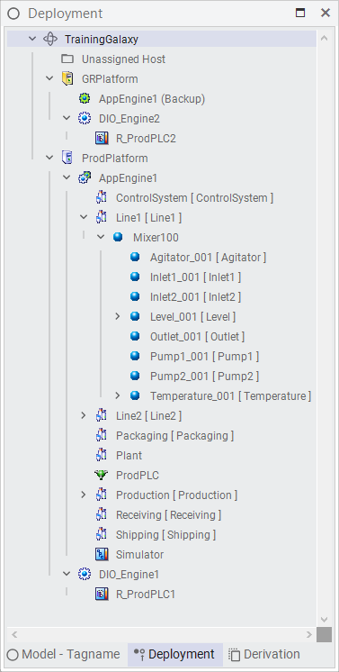
Consider the complete Mixer100 deployment hierarchy:
| Fully Qualified Name | Object Type | Role |
|---|---|---|
Plant.Production.Line1.Mixer100 | Mixer template instance | Parent — the mixer unit |
...Mixer100.Agitator_001 | Agitator | Contained child — mixing motor |
...Mixer100.Inlet1_001 | Inlet | Contained child — first inlet valve |
...Mixer100.Inlet2_001 | Inlet | Contained child — second inlet valve |
...Mixer100.Outlet_001 | Outlet | Contained child — outlet valve |
...Mixer100.Pump1_001 | Pump | Contained child — inlet pump 1 |
...Mixer100.Pump2_001 | Pump | Contained child — inlet pump 2 |
...Mixer100.Level_001 | Level sensor | Contained child — level measurement |
...Mixer100.Temperature_001 | Temperature sensor | Contained child — temperature measurement |
$Plant object and flows down through each level of containment. The dot-separated path mirrors the hierarchy exactly. This makes it easy to locate any object and understand its position in the plant structure.
Containment is defined by the Container attribute on any object. When you drag an object onto another in the Model pane, or when you set the Container attribute in the Object Viewer, you establish the containment relationship.
Reference: Module 4, Section 4 (pages 4-51 to 4-53)
Containment provides several practical benefits for building and managing a Galaxy:
Me.Pump1_001.Running)Reference: Module 4, Lab 8 (pages 4-54 to 4-66)
This lab brings together everything learned so far — template creation, inheritance, attribute configuration, and containment — into a single comprehensive equipment model. The Mixer is the most complex piece of equipment in the training Galaxy, and modeling it properly demonstrates how all these concepts work together.
Reference: Module 4, Lab 8 (pages 4-55 to 4-57)
The Mixer template serves as the parent object that will contain all sub-components. It defines the mixer's own attributes (name, status, mixing speed) as well as the structural framework for containment. Start by examining the available templates in your Galaxy.
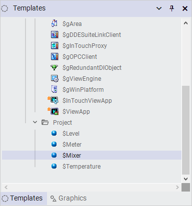
Step 1a: Expand the SMixer template to see its child objects. The SMixer template already has Level and Temperature as contained child templates — these are the sensor components built into the mixer design.
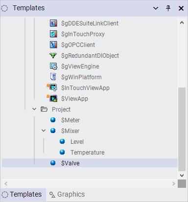
Step 1b: Examine the $Mixer object hierarchy. The template defines the complete structure: $Inlet1, $Inlet2, $Mixer (with Level and Temperature children), $Outlet, and $Valve — all nested within the Project folder.
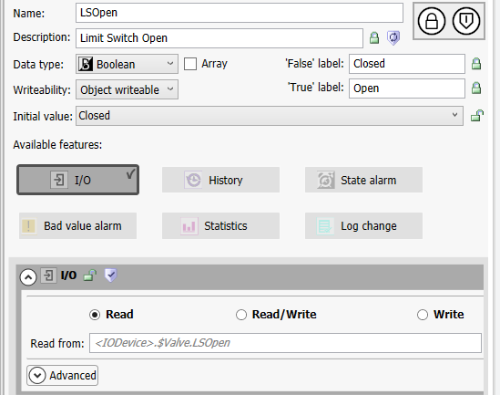
Reference: Module 4, Lab 8 (pages 4-57 to 4-61)
With the Mixer hierarchy in place, the next step is configuring each contained object's unique attributes — I/O connections, Boolean labels, and command/state definitions. Start with the valve and motor attributes.
Step 2a — Configure the Valve's LSOpen attribute: The Limit Switch Open attribute on $Valve is a Boolean that indicates whether the valve is physically open or closed. Set the data type to Boolean, the False label to "Closed", and the True label to "Open". The I/O link reads from <IODevice>.$Valve.LSOpen.
Step 2b — Configure the Motor's CMD attribute: The motor command attribute controls starting and stopping the agitator motor. Set the data type to Boolean, False label to "Stop", True label to "Start", and Initial value to "Stop". The I/O link reads from and writes to <IODevice>.$Motor.CMD.
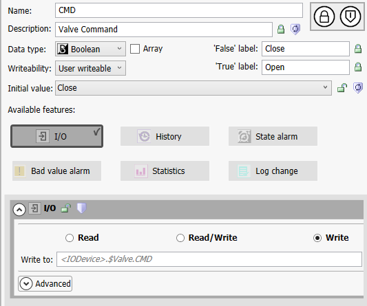
Step 2c — Configure the Motor's PV attribute: The motor process variable (PV) reports the actual running state. Set the data type to Boolean, False label to "Stopped", and True label to "Running". The I/O link reads from <IODevice>.$Motor.PV.
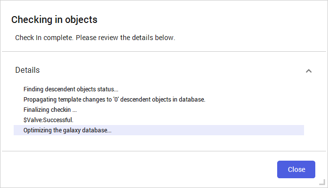
Reference: Module 4, Lab 8 (pages 4-60 to 4-62)
Now create the actual containment relationships. The $Mixer object in the Project folder contains all the sub-components — $Inlet1, $Inlet2, $Mixer (with Level and Temperature), $Outlet, and $Valve.
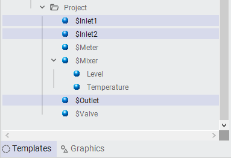
Step 3a: With all contained objects in place and attributes configured, verify the final Mixer model. The $Mixer should show all its contained objects with their configured attributes.
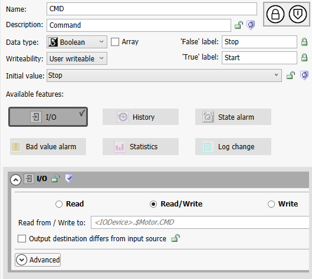
Step 3b: Verify the valve containment as well. The $Valve object contains $Inlet1 and $Inlet2 — both inlet valves are contained within the valve structure, with their LSOpen limit switch attributes properly configured.
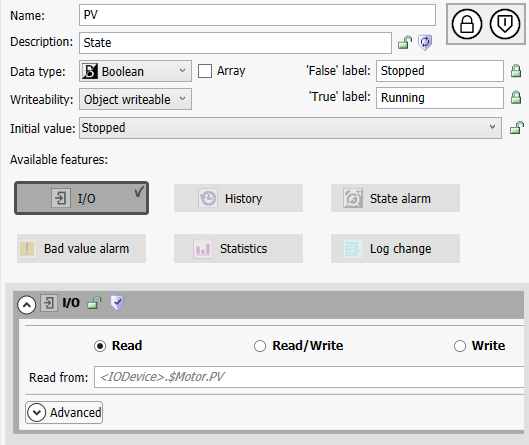
Step 3c: Confirm the Mixer-to-Inlet containment relationship. The $Mixer directly contains $Inlet1, establishing the physical containment path that the real mixer equipment represents.
Reference: Module 4, Lab 8 (pages 4-63 to 4-66)
With all attributes configured and containment relationships established, deploy the Mixer and verify that all contained objects come up correctly.
Step 4a: Right-click on Mixer100 in the Galaxy Model and select Deploy. Because Mixer100 contains all the child objects, deploying the parent automatically deploys every contained child — Agitator, Inlets, Outlet, Pumps, Level, and Temperature sensors.
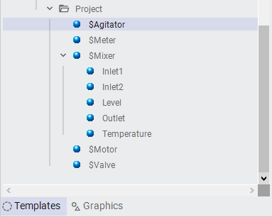
Step 4b: Verify the deployment status shows successful for all objects. If any contained object fails to deploy, check its I/O link configuration and Container attribute.
Reference: Module 4, Lab 8 (page 4-66)
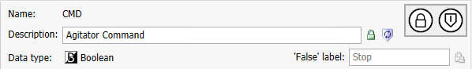
Congratulations — you have completed Lab 8 and Module 4. The Mixer model demonstrates how all the concepts from this module come together:
Q1: What is containment in Application Server, and how does it differ from a reference relationship?
Containment means one object physically contains another — the child is part of the parent's design and is deployed/deleted with it. A reference is a data link between two independent objects that remain separate in the Galaxy hierarchy.
Q2: If Mixer100 contains Pump1_001, what is Pump1_001's fully qualified name?
Plant.Production.Line1.Mixer100.Pump1_001
Q3: What happens when you deploy a parent object that contains children?
All contained child objects are deployed automatically as part of the deployment — you do not need to deploy each child individually.
Q4: What attribute on an object defines its containment relationship?
The Container attribute — it specifies the fully qualified name of the parent object that contains this object.
Q5: How many components does the Mixer100 model contain in Lab 8?
Eight components: Agitator_001, Inlet1_001, Inlet2_001, Outlet_001, Pump1_001, Pump2_001, Level_001, and Temperature_001.
Q6: What is a practical rule of thumb for deciding whether to use containment vs. a reference?
If you would need a wrench to remove component X from equipment Y in the real world, use containment. If X and Y just need to share data but are physically separate, use a reference.
Click each answer to reveal it.
Plant.Production.Line1.Mixer100.Pump1_001).Next: Lesson 15 — Module 5